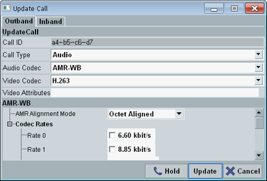
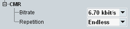
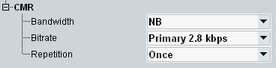
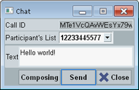
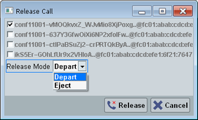

The IMS server must be running before the DUT can register and any IMS services can be used.
To start or stop the IMS server, press the [ON | OFF] key. Alternatively, right-click the "IMS Service" softkey.
The softkey shows the current service state.
For detailed step-by-step instructions, see "Using the IMS Server".
This softkey is active if you have selected an established call or a call on hold in the "Events" area.
The softkey opens a dialog box where you can modify call settings. The dialog box has two tabs described in the following.
A change on the "Outband" tab causes a re-INVITE. You can, for example, reconfigure the call type, the codec type or the supported codec rates.

The tab allows you also to put an established call on hold, or to resume a call that is on hold.
Remote command:To modify call settings, see "Call Update (Outband)".
To put a call on hold or to resume it, see
The "Inband" tab configures codec mode requests (CMR). The tab is only relevant for calls using the audio board as media endpoint. Option R&S CMW-KAA21 is required.
For AMR, you can configure the codec rate ("Bitrate"). "No Req" means that there is no codec rate requirement.
"Repetition" selects whether the configured CMR is sent only once or continuously.

For EVS, select first the "Bandwidth", then the "Bitrate". The values are defined in 3GPP TS 26.445, table A.3 "Structure of CMR".
There are two special "Bandwidth" values. "No Req" means that there is no codec rate requirement (NO_REQ). "Deactivate" means that the CMR byte is removed from the header.

This softkey is active if you have selected an established chat in the "Events" area.
- Send a message to the DUT via the established chat session.
- Send "isComposing" status messages to the DUT.

The "Participant's List" is only displayed for group chats. It selects which subscriber is indicated to the DUT as originator of the message.
To send a chat message, enter the message text and press the "Send" button.
To send an "isComposing" status message, press the leftmost button.
The button shows the status "Composing" or "Idle". Pressing the button changes the status. For each status change, the application sends an "active" status message or an "idle" status message to the DUT.
Remote command:This softkey is active if at least one session is established (for example for a call or a chat).
The softkey opens a dialog box. To release a session or connection, enable its checkbox and press the "Release" button.
For conference calls, the parameter "Release Mode" is displayed. It selects whether the connection is released by the virtual subscriber ("Depart") or by the conference server ("Eject").

This softkey is active if at least one DUT has registered.
The softkey opens a dialog box. To deregister a DUT, enable its checkbox and press the "Deregister" button.
Remote command: